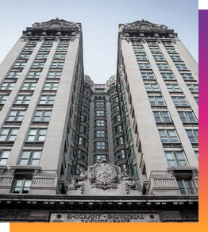
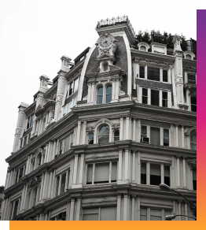

Manhattan is one of the five boroughs of New York City, located on the island of
the same name. The history of Manhattan dates back thousands of years, when the
area was inhabited by Indians. In 1524, Florentine explorer
Giovanni da Verrazzano
, sailing in service of King Francis I of France, became the first documented
European to visit the area that would become New York City.
In the 19th century, Manhattan became one of the most important
economic centers
in the United States, and its dense development and tall buildings, including the
first willows, became a symbol of the power of the city and the country. In the
1990s and 2000s, Manhattan experienced rapid growth in the financial services
sector, becoming a center of commerce and business around the world.
Established in France in the 1920s, the sleek but not minimal style of Art Deco unmistakably represents the era of the Machine Age. It is a prominent architectural style in New York City, known for its sleek lines, geometric patterns, and luxurious materials. One Wall Street Building is an awesome example, showcasing the opulence and glamour of the era.
It evolved from French classicism as a result of new technologies and modern materials. Beaux-Arts merges the grand essence of classicism’s columns, with the Renaissance style and technological advances; specifically the use of steel and glass to allow light. This style puts an emphasis on symmetry, columnar support, and triangular pediments. 49 Chambers is direct example of this style.
The International Style, marked by simplicity, clean lines, and functionality, had a significant impact on New York City's architectural landscape. It developed in 1920s and 1930s, it was closely related to modernism and is often defined as “modern movement” in architecture. The Seagram Building, designed by Ludwig Mies van der Rohe exemplify this style's minimalist aesthetics and emphasis on glass and steel.
Cast-iron architecture is a distinctive style that flourished in New York City during the 19th century. It is characterized by the use of cast-iron elements for structural support, decorative embellishments, and facades. This architectural style gained popularity due to its affordability, versatility, and fire-resistant properties. Cast iron style remains an important part of New York's architectural heritage, including The Gisley House on 29th on Broadway.
Gothic Revival is an architectural style that emerged in the 18th century and experienced a revival in the 19th century. It draws inspiration from medieval Gothic architecture, characterized by pointed arches, ribbed vaults, ornate tracery, and elaborate detailing. In New York City, Gothic Revival architecture can be seen in various structures, particularly religious and educational buildings. The magnificent Cathedral of St. Jogh the Divine, located in Morningside Heights, showcases the grandeur and intricate detailing of the style.